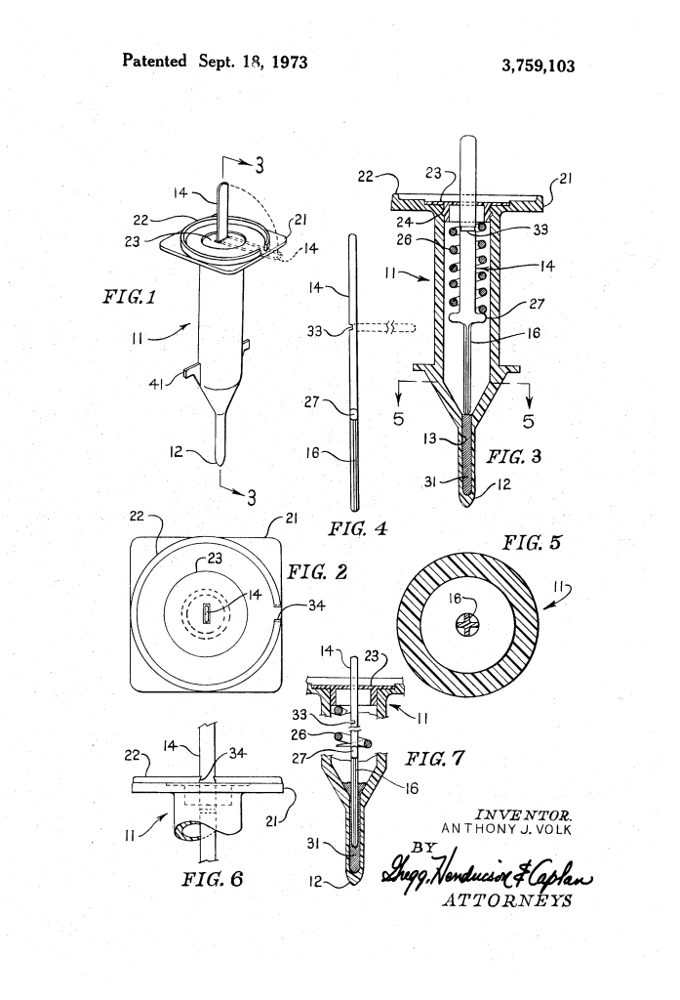

From the archive · Originally published November 28, 2014. This article reflects its original publication period and has not been substantively updated. Laws, procedures, and technology may have changed. Author and contact information are current.
Given the Thanksgiving holiday, I thought it appropriate to post about a Thanksgiving-related patent, namely, U.S. Pat. No. 3,759,103 issued to Anthony Volk on September 18, 1973.


Figs. 1-7 from Volk’s 1973 Patent
If you’re interested in the history of turkey thermometers, the Smithsonian’s Lemelson Center for the Study of Invention and Innovation has a blog post containing a good discussion. If you’re just curious how they work, it’s pretty simple – a spring loaded indicator is secured in place by a small piece of metal that melts at the correct temperature, causing the spring to push the indicator out.
As a Registered Patent Attorney, I’m interested in patents. And, as is the case with all patents, Volk’s patent application had to meet a few requirements before it was issued by the USPTO as a patent.
First, Volk’s application had to meet the requirements of 35 USC 101. Because the application discloses a useful machine, this was a fairly easy hurdle for Mr. Volk. Most inventions satisfy this requirement. However, some business methods and software-based inventions may not satisfy this requirement under current United States law (this area of the law is currently undergoing significant change in the courts).
Second, Volk’s application had to meet the requirements of 35 USC 102 and 103. This means that an application must disclose a new and non-obvious improvement over what came before (patent attorneys call what came before the “prior art”). During examination by the USPTO, the Examiner determined that Volk’s invention was, in fact, a new and non-obvious improvement over the prior art.
Third, Volk’s application had to meet the requirements of 35 USC 112. One of these requrements is that the patent application must be “enabling” and thus must teach others how to make and use the invention. This requirement is there for a number of reasons, but one of the most important is the raison d’etre of the patent system. The patent system incentivizes inventors to teach others how to make and use their inventions by giving them (if otherwise entitled) an exclusive right to make and use their invention.
Quid pro quo, Clarice.